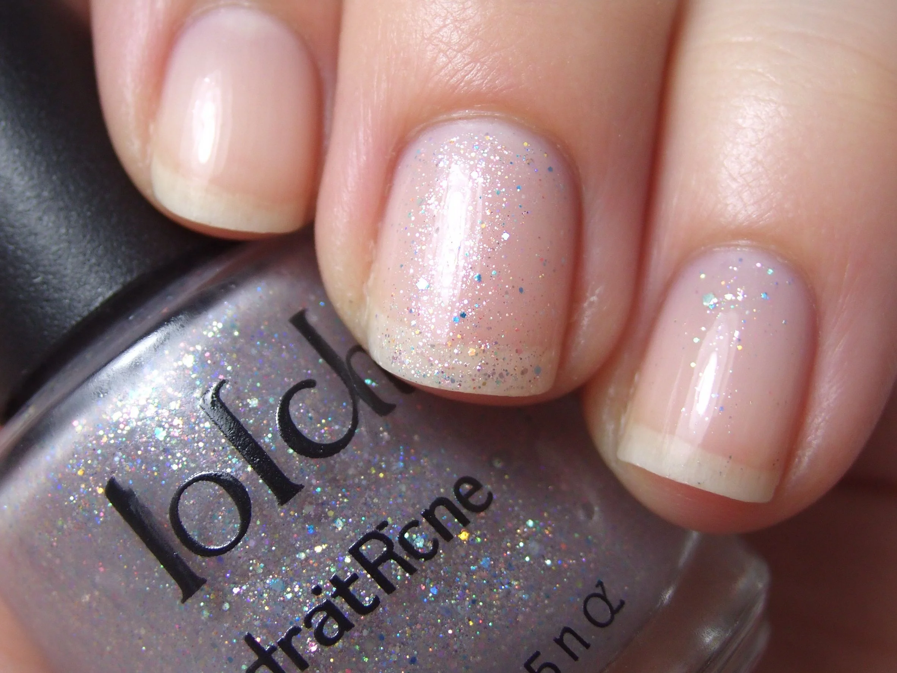

美甲養甲強化是什麼？入門入門攻略
養甲不是吃什麼神奇補品，是「剪短、少磨、天天擦油」這三件事重複做三個月。
養甲強化原理與辨識重點：美甲師不說的定期修剪
「養甲強化」指的是透過日常保養，讓本來偏薄、易斷的真甲慢慢變厚、變有彈性。核心觀念很簡單：甲母質在指根底下，營養、水分、沒有外力傷害，它長出來的指甲自然就健康。與其買昂貴的硬甲油，不如先把日常習慣顧好。
誰適合做養甲強化？養甲控對號入座
習慣咬甲、卸甲太頻繁、或天生甲偏薄的人，想把真甲養回來；也適合想長期素甲又能自然留長、不想一直依賴凝膠的人。
養甲強化美甲施作步驟：硬甲油＋定期修
先把指甲剪到最短（方圓型）→ 停止做美甲 4–6 週 → 早晚指緣油擦指根和甲面上緣 → 一週 2 次硬甲油 → 洗完手立刻擦 → 長出來的新指甲先留 1–2 毫米，不要馬上剪。
養甲強化優缺點分析：美甲持久度與傷甲評估
| 優點 | 說明 |
|---|---|
| 養好的指甲可以自己留長、不用靠凝膠保護，看起來自然有光、壓起來也不會軟軟的。 | 是日系流派的招牌，入門就能上手 |
| 缺點 | 說明 |
| 見效慢，至少 2–3 個月才會有明顯差異，中途容易因為想做美甲而放棄。 | 前置與最怕「一邊養一邊傷」：白天擦油、晚上又去開罐頭、撕膠帶，等於白養。養甲期間所有「用指甲當工具」的動作都要戒。沒顧好會打折 |

養甲強化新手雷區：少摳與常見錯誤
注意：最怕「一邊養一邊傷」：白天擦油、晚上又去開罐頭、撕膠帶，等於白養。養甲期間所有「用指甲當工具」的動作都要戒。
養甲強化和其他美甲做法的差別比較
「養甲」跟「做加固凝膠」不同：加固凝膠是用人造材料補強，指甲本身還是薄的；養甲是讓真甲自己長厚。兩者可以階段性交替，但不能永遠依賴加固。
養甲強化美甲常見問題 FAQ
Q：要養多久才可以再做美甲？ A：建議真甲長出 3–4 毫米、壓起來不會彎，就代表夠厚了，大約 2–3 個月。
Q：硬甲油和指緣油差在哪？ A：硬甲油塗在甲面上，目的是讓甲板變硬；指緣油是油狀、擦在指根和皮膚交界，目的是補水。兩者不能互相取代。
Q：做指甲的期間可以同時養甲嗎？ A：可以。挑選可撓底膠當加固、每 3–4 週回補、不要硬摳，凝膠本身就像在保護真甲長大。